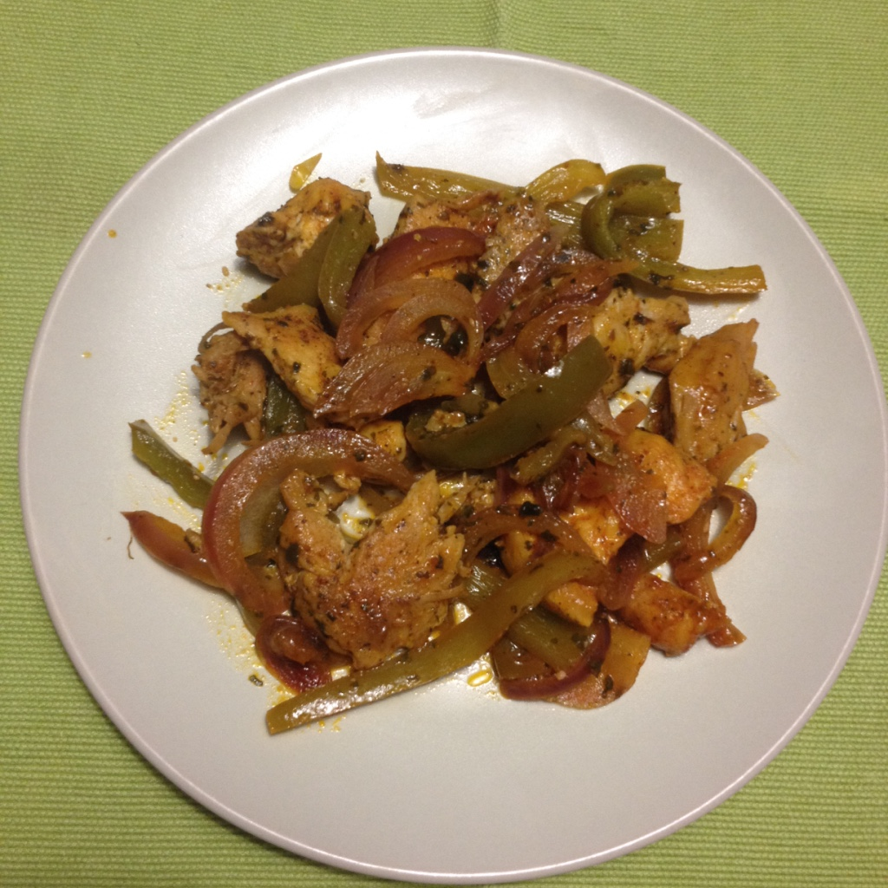
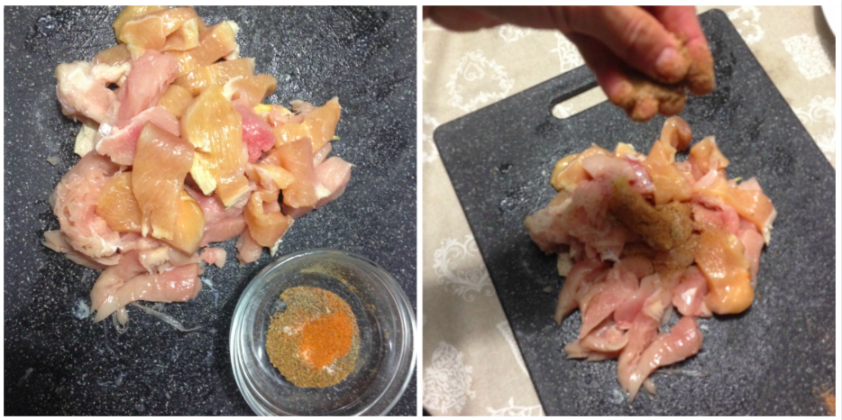
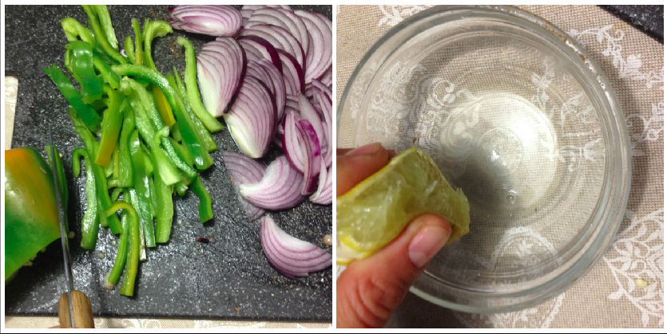
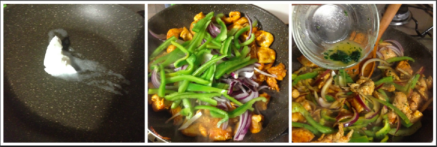

Chicken lime cilantro¶

- Serves: 2
- Type: main
This is a very simple recipe inspired in Mexican food, it takes only 15 minutes and it is really delicious, the lime and the coriander matched so perfectly and make this plate dedicated and exotic. Since I am in a low carb diet, we just had this delicious plate with some sour cream and we served ourselves abundantly.
Ingredients¶
- Half medium chicken breast cut in dices
- Juice from 2 limes
- Fresh chopped coriander
- 1 teaspoon cumin
- 1 teaspoon chili powder
- Salt and pepper to taste
- 1 small red onion
- 1 green bell pepper
- 2 tablespoon butter
Steps¶
Mix in a small bowl the cumin, chili powder, salt and pepper and sprinkle on the diced chicken

sprinkle the chicken with the spice mix
Cut in large slices the onion and the bell pepper

Cut in slices the vegetables
Melt the butter in a fry pan, add the chicken and stir fry it and cook it for five minutes, then add the vegetables and cook for another 5 minutes. Squeeze the limes in a bowl and mix with the chopped coriander. Pour it on the chicken-vegetable, stir gently and cook for other 2 minutes and it is ready to serve.

Cooking the chicken with vegetables and lime juice
Can be served with¶
- Sour cream topping
- Tortillas